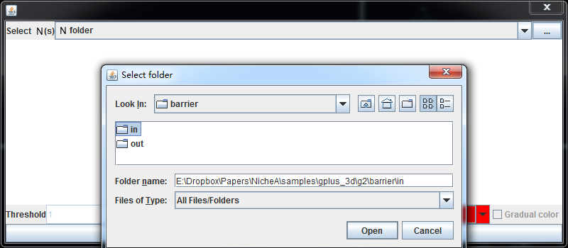
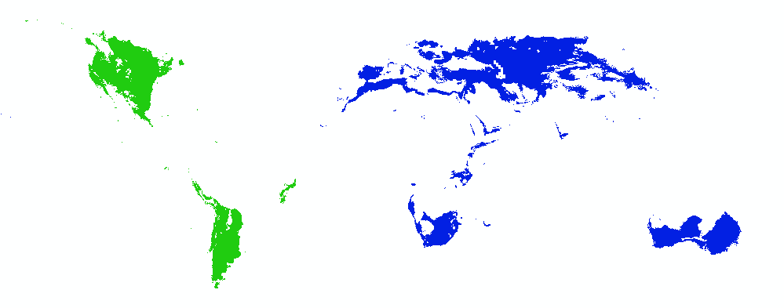

Create barriers to separate a N into two Ns.
Note:
The sample in this section is based on the N No.2 in 3D E space, which was created in the previous section. Before you try this section, you should open the BC and N No.2.
The BARRIERS are a kind of implementation of M (Mobility) in BAM (Biotic, Abiotic, Mobility, or BAM) framework. In NicheA, you can design a barriers based on a N. The function's entrance is in Fig. 1. After clicking the menu, a dialog appears to pick a N to design barriers (Fig.2). After you pick a N, NicheA will map it to G space which is shown as a map. In this map, you can design a polygon by your mouse. When you click the map, NicheA will create a vertex, and connect the vertex with the previous one. After you double click on the map, NicheA will connect the first vertex and the last one to generate a polygon (Fig.3). Then you can click the "Generate" button and give a name to the polygon (Fig.4), NicheA will help you to split the map into two parts, which are save in the same folder in the N which are named as "in" and "out" (Fig.5). "in" means all the areas inside of the polygon. "out" means the other areas. Both of "in" and "out" are independent Ns which you can open in NicheA (Fig. 6 and 7). You can also open the GeoTiff files in the corresponding folder to show the map in G space in ArcGIS (Fig.8).
Note:
The N can be downloaded via this link.

